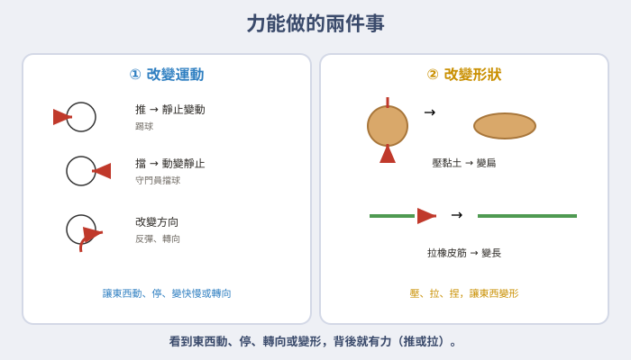
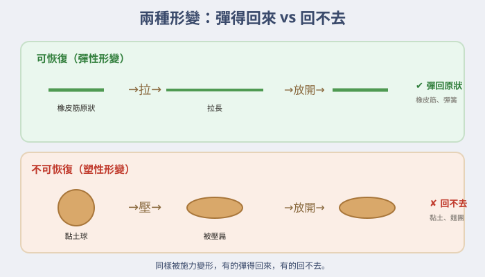
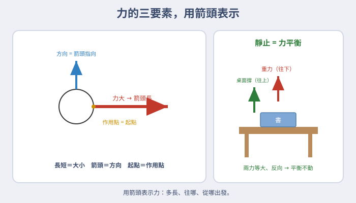
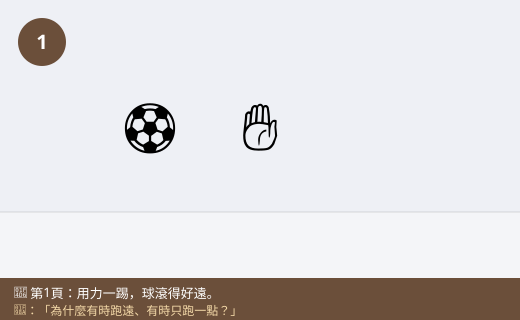
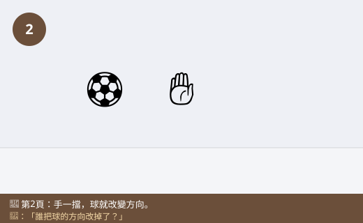
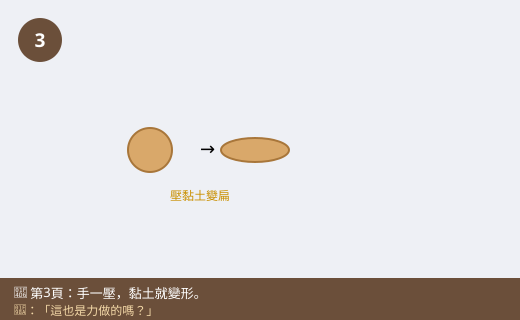
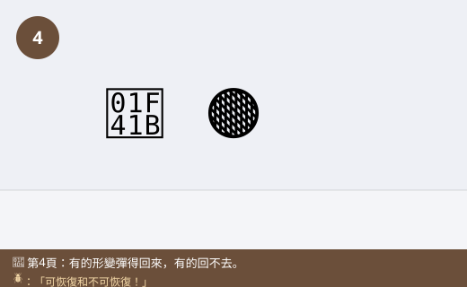
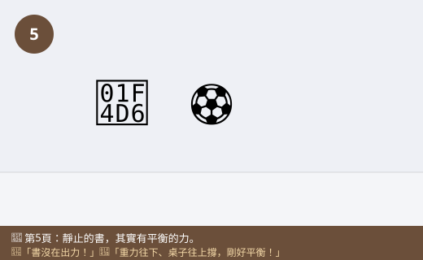
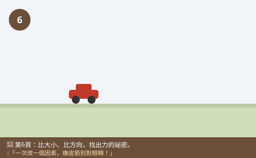

圖一（概念圖）：力能做的兩件事

- 圖像目的
- 整理力的兩大效果：改變運動與改變形狀。
- 圖中應出現的元素
- 左：改變運動（踢球動、擋球停、轉向）；右：改變形狀（壓黏土、拉橡皮筋）。
- 必須標示的科學概念
- 力可改變運動狀態，也可改變形狀。
- 圖說
- 「看到東西動、停、轉向或變形，背後就有力。」
- AI 繪圖提示詞
- 溫暖手繪繪本風，左半：踢球（動）、擋球（停）、轉向；右半：手壓黏土變扁、拉橡皮筋變長。繁體中文，白底。
- 避免畫錯的提醒
- 用箭頭標出推／拉的方向；效果與施力對應正確。
💡 看不見、摸不著的「力」，卻能讓球飛出去、讓黏土變形、讓玩具車停下來——力就藏在每一次推和拉裡！
| 適合年級 | 國小四年級 |
|---|---|
| 可銜接年級 | 四年級 → 五年級（摩擦力）→ 國中力與運動 |
| 主題分類 | 力、運動與機械 |
| 核心概念 | 力會改變物體的形狀與運動；力有大小、方向與作用點 |
| 關鍵詞 | 力、推、拉、形變、運動、方向、大小 |
| 可銜接的國中概念 | 力的作用、力的表示、力與運動 |
| 建議閱讀時間 | 約 16 分鐘 |
| 適合搭配的課堂活動 | 黏土形變、推球比賽、彈簧測力計初體驗 |
體育課踢足球，小狐同學卯足了勁一腳踢出去，球「咻」地飛過草地，滾了好遠才停下來。他跑過去又踢，這次輕輕一碰，球只滾了一小段。「奇怪，同一顆球，為什麼有時候跑很遠、有時候只跑一點點？」他蹲下來盯著球，怎麼看都看不出球有什麼不同。
接著，守門員把飛來的球用手一擋，球「碰」地一下就往反方向彈回去。小狐同學更疑惑了：「球本來往這邊飛，怎麼被手一擋，就往那邊跑了？誰把它的方向改掉的？」下課後，他捏著一塊黏土玩，用手一壓，圓球變成了扁扁的餅；再一搓，又變成細細的長條。「黏土也是我一碰它就變形……這些變化，好像都跟我的『手』有關係。」
他把這些事情排在一起想：踢球、擋球、壓黏土——好像每一次，都是他「用力」去對東西做了什麼，東西就動起來、停下來、改變方向，或是變了形狀。「難道，讓東西動、停、變形的，就是那個看不見的『力』？可是力到底是什麼？我又看不到它。」
黑熊老師笑著說：「小狐，你已經摸到『力』的門了！力就是物體之間的『推』或『拉』。你踢球是推、拉橡皮筋是拉。力雖然看不見，但我們看得到它的『效果』：力可以讓靜止的東西動起來、讓動的東西停下或改變方向，還可以改變東西的形狀。而且，你出的力有多大、往哪個方向、作用在哪裡，效果都不一樣。我們來研究推推拉拉的科學吧！」
黑熊老師，力看不見也摸不到，我怎麼知道它存在？
我們看不到力本身，但看得到它的「效果」。當你看到東西「開始動、停下來、改變方向，或是變形」，背後一定有力在作用。力最基本的樣子，就是「推」和「拉」。
那力可以做到哪些事？
主要兩大類：第一，改變運動狀態——讓靜止的東西動（踢球）、讓動的東西停（擋球）、讓它變快變慢或改變方向。第二，改變形狀——把黏土壓扁、把橡皮筋拉長、把海綿捏小。動和變形，都是力的效果。
補一個冷知識！形狀的改變有兩種：橡皮筋、彈簧被拉放開後會「彈回原狀」，叫「可恢復的形變」；黏土、麵團被壓過就「回不去了」，叫「不可恢復的形變」。同樣是被施力變形，結果卻不一樣，很有趣吧！
那為什麼同一顆球，用力踢跑很遠、輕輕踢跑一點點？
因為力有「大小」！力越大，效果越明顯——用力踢（力大），球跑得又快又遠；輕輕踢（力小），球只滾一點。除了大小，力還有「方向」（往哪推）和「作用點」（推在哪個位置），這三樣合起來，決定了力的效果。
哼，力就是「用力」嘛，只有大力士、只有動的東西才有力！桌上那本靜靜躺著的書，根本沒有力，站著不動的人也沒在出力，這還用問～
迷思怪獸，這裡有兩個誤會！第一，力不是只有「很大力」才算，輕輕碰一下也是力，只是比較小。第二，就算是靜止的東西，也有力在作用——桌上的書被地球往下拉（重力），桌子又往上撐住它，兩個力剛好平衡，書才靜靜不動。看不到不代表沒有力喔。
原來力無所不在！那我怎麼觀察力的大小和方向？
我們來做兩個實驗！第一，用黏土和橡皮筋，觀察「可恢復」和「不可恢復」的形變。第二，推同一台玩具車，比較「用力大小」和「推的方向」對它跑多遠、往哪跑的影響。一次只改一個因素，記錄結果。橡皮筋別彈到眼睛喔！
力就是物體之間的「推」或「拉」。力看不見，但看得到它的效果。力可以做兩大類事：①改變運動——讓靜止的東西動起來、讓動的東西停下或改變方向、變快變慢；②改變形狀——把黏土壓扁、把橡皮筋拉長。形變有兩種：橡皮筋放開會彈回原狀（可恢復），黏土壓過回不去（不可恢復）。力還有大小（用力大跑得遠）、方向（往哪推）和作用點（推在哪裡）。連靜止不動的東西，也可能有互相平衡的力在作用。
力是物體對物體的作用（推或拉），是一種交互作用。力的效果包括：改變物體的運動狀態（由靜止到運動、由運動到靜止、改變速度快慢或方向）與改變物體的形狀（形變）。形變分為可恢復（彈性形變，如彈簧、橡皮筋）與不可恢復（塑性形變，如黏土、麵團）。描述一個力要說清楚它的大小、方向與作用點三要素，相同大小但方向或作用點不同，效果就不同。力有多種形式（如推力、拉力、重力、摩擦力等）。物體靜止不代表沒有受力，可能是多個力互相平衡的結果（如桌上的書受重力與桌面支撐力平衡）。
力是物體間的交互作用，會改變物體的運動狀態（速度大小或方向）或使物體形變。國中以「力的三要素」（大小、方向、作用點）與力的向量表示，並用力圖／自由體圖分析。物體受合力為零時保持靜止或等速直線運動（力的平衡、慣性）；合力不為零時運動狀態改變（連結牛頓運動定律）。力的量測使用彈簧測力計（依虎克定律，彈性形變與施力成正比），單位為牛頓（N）。常見力包含重力、正向力、摩擦力、彈力、張力等。國中理化「力與運動」會延伸探討。









| 適合年級 | 四年級 |
|---|---|
| 材料 | 黏土、橡皮筋、彈簧或海綿、玩具車、平坦桌面或地板、捲尺、紀錄表 |
推的力氣大小（或推的方向／作用點，一次只改一個）。
玩具車跑的距離、跑的方向、有沒有轉彎；形變是否恢復。
同一台車、同一起點與地面、同樣的出發方式；研究大小時方向與作用點固定。
| 怎麼施力 | 跑多遠 | 往哪個方向 | 有沒有轉彎 |
|---|---|---|---|
| 輕輕推 | |||
| 用力推 | |||
| 推邊邊 |
用力推時，車子跑得又快又遠；輕輕推只跑一小段——這證明力越大，改變運動的效果越大。改變推的方向，車子就往那個方向跑；推車子的邊邊（作用點偏一邊），車子容易轉彎，而不是直直前進。黏土壓過回不去（不可恢復），橡皮筋放開彈回原狀（可恢復）。這些都說明：力能改變物體的運動與形狀，而力的大小、方向、作用點會決定效果。
⚠️ 安全提醒：拉橡皮筋、彈簧時，不要對著自己或別人的臉和眼睛，以免鬆脫彈傷；推玩具車時周圍淨空，避免撞到人或掉落；黏土玩後洗手、不放入口；地面保持乾淨避免滑倒。
👾 迷思說法：只有「很大力」才算力，輕輕碰不算。
為什麼容易誤解：日常說「用力」都是指很大力。
✅ 正確說法：力有大有小，輕輕碰一下也是力，只是比較小。力的效果會隨大小改變，但不管大小，推或拉都是力。
可以怎麼驗證：輕輕推玩具車，它也會動一點點，代表輕碰也有力。
👾 迷思說法：靜止不動的東西，一定沒有力在作用。
為什麼容易誤解：沒看到東西動，就以為沒有力。
✅ 正確說法：靜止可能是「多個力互相平衡」。桌上的書被地球往下拉（重力），桌面往上撐住它，兩力剛好抵消，書才不動——不是沒有力。
可以怎麼驗證：把書放在海綿上，海綿被壓凹，代表書確實往下施力、海綿往上撐。
👾 迷思說法：力只會讓東西「動」，不會改變形狀。
為什麼容易誤解：最常看到力讓東西移動。
✅ 正確說法：力有兩大效果：改變運動，也能改變形狀。壓黏土、拉橡皮筋、捏海綿都是力讓東西「變形」。
可以怎麼驗證：用手壓黏土，它變扁了，就是力改變形狀。
👾 迷思說法：所有被壓變形的東西，放開都會彈回原狀。
為什麼容易誤解：玩過彈簧、橡皮筋，覺得都會彈回。
✅ 正確說法：不一定。橡皮筋、彈簧是「可恢復形變」會彈回；黏土、麵團是「不可恢復形變」，壓過就回不去了。
可以怎麼驗證：比較橡皮筋（放開彈回）和黏土（壓扁停住），結果不同。
👾 迷思說法：只要方向不同、大小一樣，力的效果都相同。
為什麼容易誤解：覺得力只看「多大力」。
✅ 正確說法：力的效果由「大小、方向、作用點」共同決定。同樣大小的力，往不同方向推、推在不同位置，結果不一樣（例如推邊邊會讓東西轉彎）。
可以怎麼驗證：用相同力氣推玩具車正中間與邊邊，一個直走、一個轉彎。
1. 下列哪一項「不是」力的效果？
(A) 讓靜止的球動起來 (B) 讓黏土變扁 (C) 讓運動的車停下 (D) 讓東西自己變顏色
答案：D。變顏色不是力的效果；動、停、變形才是。
2. 用力踢球比輕輕踢跑得遠，說明力的什麼會影響效果？
(A) 顏色 (B) 大小 (C) 溫度 (D) 味道
答案：B。力越大，效果越明顯。
3. 下列哪一個是「可恢復（放開會彈回）」的形變？
(A) 壓扁的黏土 (B) 揉過的麵團 (C) 拉長的橡皮筋 (D) 折彎的鐵絲
答案：C。橡皮筋放開會彈回；黏土、麵團、折彎鐵絲回不去。
4. 桌上靜止不動的書，下列敘述何者正確？
(A) 完全沒有力作用 (B) 只有重力 (C) 重力與桌面支撐力互相平衡 (D) 書自己撐住自己
答案：C。兩力平衡，書才靜止。
5. 描述一個力時，需要說清楚哪三件事？
(A) 顏色、味道、溫度 (B) 大小、方向、作用點 (C) 長度、寬度、高度 (D) 快慢、輕重、冷熱
答案：B。力的三要素：大小、方向、作用點。
1. 力有哪兩大類效果？各舉一個例子。
改變運動（如踢球讓球動、擋球讓球停）與改變形狀（如壓黏土、拉橡皮筋）。
2. 「可恢復」和「不可恢復」的形變有什麼不同？各舉一例。
可恢復：施力變形、放開會彈回原狀，如橡皮筋、彈簧；不可恢復：變形後回不去，如黏土、麵團。
3. 為什麼說「靜止的書也有力在作用」？
因為書受到地球向下的重力，同時桌面給它向上的支撐力，兩個力大小相等、方向相反，互相平衡，所以書靜止不動——不是沒有力，而是力平衡。
1. 你想用玩具車證明「力越大，車跑越遠」。請設計一個公平的實驗，並說明哪些條件要保持一樣。
操縱變因：推的力氣大小（如用彈簧壓不同格數彈射）。應變變因：車跑的距離。控制變因：同一台車、同一起點、同一地面、同樣的推的方向與作用點。只改力氣、其他固定，才公平；每種力氣測幾次取平均更可靠。
2. 推購物車時，如果只推車子的「一邊」，車子常會轉彎而不是直直前進。你能用「力的作用點」來解釋嗎？要怎麼推才會直走？
因為施力的「作用點」偏在一邊，力沒有通過車子中央，會讓車子一邊比另一邊被推得多，於是轉彎。若想直走，應把力施在車子的中間（或兩邊平均施力），讓推力方向對準前進方向、通過中央，車子才會直直前進。
| 向度 | 待加強（1） | 通過（2） | 優秀（3） |
|---|---|---|---|
| 概念理解 | 認為靜止＝沒力 | 能說出力的效果與三要素 | 能用力平衡、作用點解釋現象 |
| 探究能力 | 未控制變因 | 能控制變因完成推力實驗 | 能設計公平實驗並分析原因 |
| 態度 | 忽視安全 | 遵守彈性物品安全 | 主動提醒同學安全操作 |
| 檢核項目 | 結果 | 備註 |
|---|---|---|
| 科學概念是否正確 | ✅ | 力＝推拉、改變運動與形狀、可恢復與不可恢復形變、力三要素、力平衡，敘述正確。 |
| 是否符合年級理解程度 | ✅ | 四年級以踢球、黏土等生活經驗切入。 |
| 是否有錯誤或過度簡化的比喻 | ✅ | 以推拉與效果說明，未造成錯誤模型。 |
| 是否清楚區分觀察、推論與解釋 | ✅ | 由運動與形變的觀察，推論力的存在與要素。 |
| 圖像提示詞是否可能造成誤解 | ✅ | 已提醒箭頭對應大小方向、平衡兩力等長反向、形變結果正確。 |
| 實驗是否安全 | ✅ | 彈性物品不對眼、周圍淨空、黏土不入口，安全低成本。 |
| 是否需要補充資料來源 | ✅ | 對應 INc-Ⅱ-3、INd-Ⅱ-9、INd-Ⅱ-8；見教師補充。 |
| 是否適合轉成 HTML 網頁 | ✅ | 結構完整，含互動測驗與摺疊區。 |